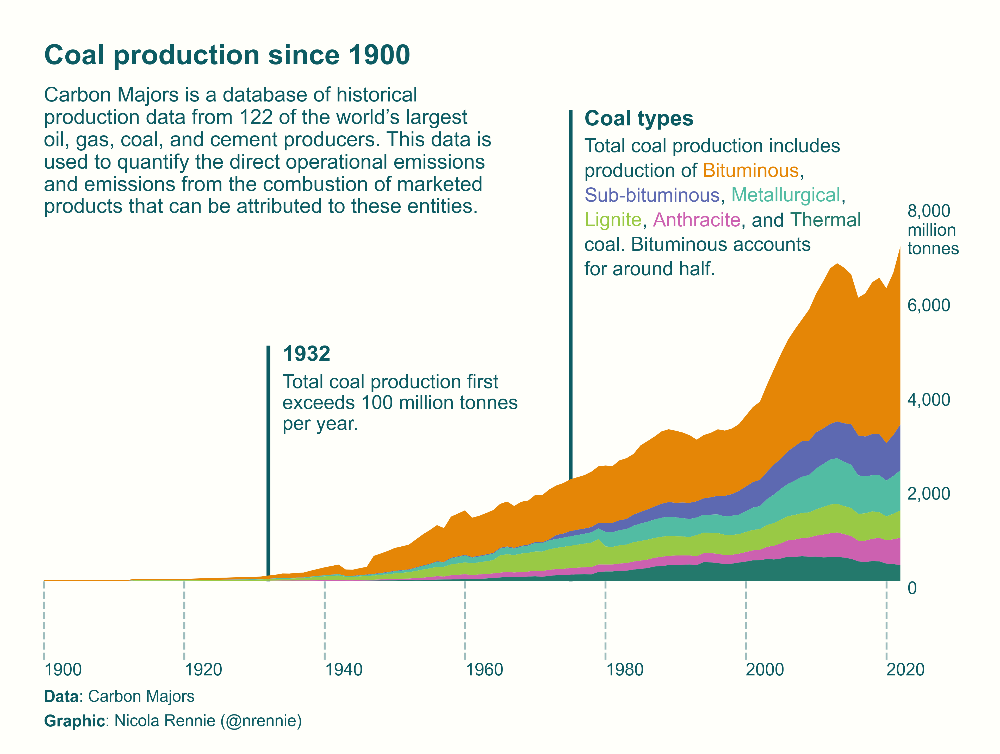

import plotnine as gg
import pandas as pd
import textwrap
import matplotlib.pyplot as plt
import highlight_text as ht
import matplotlib.font_managerArea charts with plotnine
2024 plotnine Contest
In this tutorial, we’ll be discussing how to create the following plot:

Prep
Packages required
Reading in data
emissions = pd.read_csv(
'https://raw.githubusercontent.com/rfordatascience/tidytuesday/master/data/2024/2024-05-21/emissions.csv')Data wrangling
# Prep data for plotting
plot_data = emissions[
emissions['commodity'].isin([
'Sub-Bituminous Coal', 'Metallurgical Coal', 'Bituminous Coal',
'Thermal Coal', 'Anthracite Coal', 'Lignite Coal'
])
].copy()
plot_data['commodity'] = plot_data['commodity'].str.replace(' Coal', '')
plot_data = plot_data[['year', 'commodity', 'production_value']]
plot_data = plot_data.groupby(['year', 'commodity'], as_index=False).agg(
{'production_value': 'sum'}).rename(columns={'production_value': 'n'})
plot_data = plot_data[plot_data['year'] >= 1900]
# Sort values by 2022 levels
orders = plot_data[plot_data['year'] == 2022].sort_values(
by='n', ascending=False)['commodity']
plot_data['commodity'] = pd.Categorical(
plot_data['commodity'],
categories=orders,
ordered=True)# Values for annotations
exceeds100 = plot_data.groupby('year')['n'].sum()
exceeds100 = exceeds100[exceeds100 > 100].index.min()# Create data for x-axis labels
segment_data = pd.DataFrame({
'year': list(range(1900, 2021, 20))
})
y_axis_data = pd.DataFrame({
'value': [0, 2000, 4000, 6000, 8000],
'label': ['0', '2,000', '4,000', '6,000', '8,000\nmillion\ntonnes']
})# Define background colour, text colour, and colour palette
bg_col = '#FFFFFA'
text_col = '#0D5C63'
col_palette = [
'#E58606',
'#5D69B1',
'#52BCA3',
'#99C945',
'#CC61B0',
'#24796C']
# Check if 'Arial' in list of installed fonts
flist = matplotlib.font_manager.findSystemFonts()
names = [matplotlib.font_manager.FontProperties(
fname=fname).get_name() for fname in flist]
if 'Arial' in names:
body_font = 'Arial'
else:
body_font = 'sans'# title, subtitle
title_text = 'Coal production since 1900'
st = 'Carbon Majors is a database of historical production data from 122 of the world’s largest oil, gas, coal, and cement producers. This data is used to quantify the direct operational emissions and emissions from the combustion of marketed products that can be attributed to these entities.'
wrapped_subtitle = '\n'.join(textwrap.wrap(st, width=50))
# annotation labels
coal_types_label = 'Total coal production includes\nproduction of <Bituminous::{"color": "#E58606"}>,\n<Sub-bituminous::{"color": "#5D69B1"}>, <Metallurgical::{"color": "#52BCA3"}>,\n<Lignite::{"color": "#99C945"}>, <Anthracite::{"color": "#CC61B0"}>, and <Thermal::{"color": "#24796C"}>\ncoal. Bituminous accounts\nfor around half.'
# caption
cap = '<Data::{"fontweight": "bold"}>: Carbon Majors\n<Graphic::{"fontweight": "bold"}>: Nicola Rennie (@nrennie)'p = (gg.ggplot(plot_data, gg.aes(x='year', y='n')) +
# Axis lines
gg.geom_segment(data=segment_data, mapping=gg.aes(x='year', xend='year', y=0, yend=-1700),
linetype='dashed', alpha=0.4, color=text_col) +
# Axis labels
gg.geom_text(data=segment_data, mapping=gg.aes(x='year', y=-1900, label='year'),
color=text_col, size=8, family=body_font, ha='left') +
gg.geom_text(data=y_axis_data, mapping=gg.aes(x=2023, y='value', label='label'),
color=text_col, size=8, family=body_font, ha='left', va='top') +
# Annotation 1
gg.annotate(
'segment',
x=exceeds100, xend=exceeds100,
y=0, yend=5000,
size=1,
color=text_col
) +
gg.annotate(
'text',
x=exceeds100 + 2, y=5000,
label=exceeds100,
color=text_col,
family=body_font,
ha='left',
va='top',
size=10,
fontweight='bold'
) +
gg.annotate(
'text',
x=exceeds100 + 2, y=5000 - 600,
label='Total coal production first\nexceeds 100 million tonnes\nper year.',
color=text_col,
family=body_font,
ha='left',
size=9,
va='top'
) +
# Annotation 2
gg.annotate(
'segment',
size=1,
x=1975, xend=1975,
y=0, yend=10000,
color=text_col
) +
gg.annotate(
'text',
x=1975 + 2, y=10000,
label='Coal types',
color=text_col,
family=body_font,
ha='left',
va='top',
size=10,
fontweight='bold'
) +
# Area plot
gg.geom_area(gg.aes(fill='commodity')) +
# Scales
gg.scale_fill_manual(values=col_palette) +
gg.scale_x_continuous(limits=(1896, 2034)) +
gg.scale_y_continuous(limits=(-3300, 12000)) +
# Text for title and subtitle
gg.annotate(
'text',
x=1900, y=11400,
label=title_text,
color=text_col,
family=body_font,
ha='left',
va='top',
size=13,
fontweight='bold'
) +
gg.annotate(
'text',
x=1900, y=10500,
label=wrapped_subtitle,
color=text_col,
family=body_font,
size=9.5,
ha='left',
va='top'
) +
# Styling
gg.coord_cartesian(expand=False) +
gg.theme_void(base_size=8) +
gg.theme(
legend_position='none',
plot_background=gg.element_rect(fill=bg_col, color=bg_col),
panel_background=gg.element_rect(fill=bg_col, color=bg_col)
))# Add coloured text with matplotlib and highlight-text
fig = p.draw()
fig.set_size_inches(8, 6, forward=True)
fig.set_dpi(300)
ax = plt.gca()
ht.ax_text(
1977,
9400,
coal_types_label,
vsep=3,
color=text_col,
fontname=body_font,
fontsize=9,
va='top')
ht.ax_text(1900, -2300, cap, color=text_col,
fontname=body_font, fontsize=7.5, va='top')
plt.show()